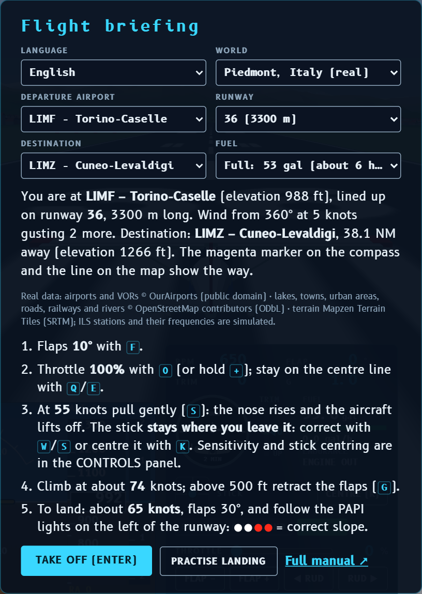
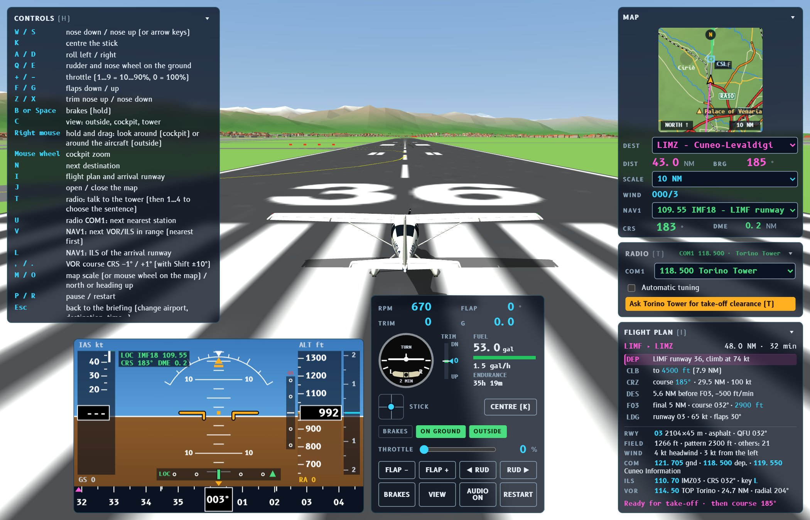
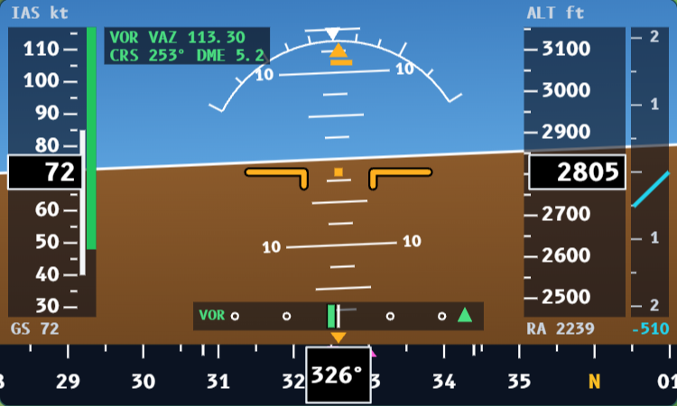
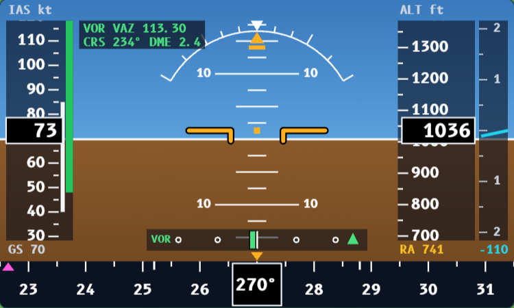
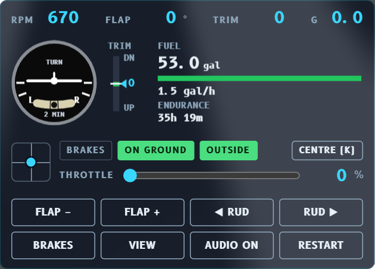
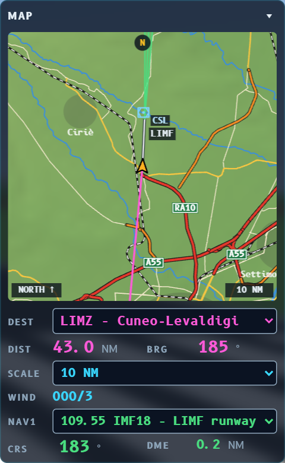
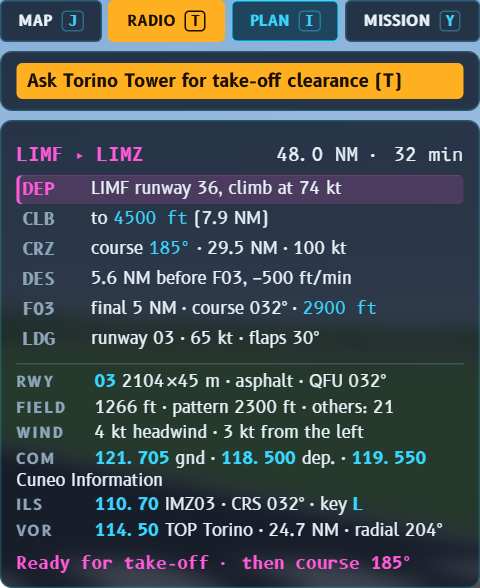
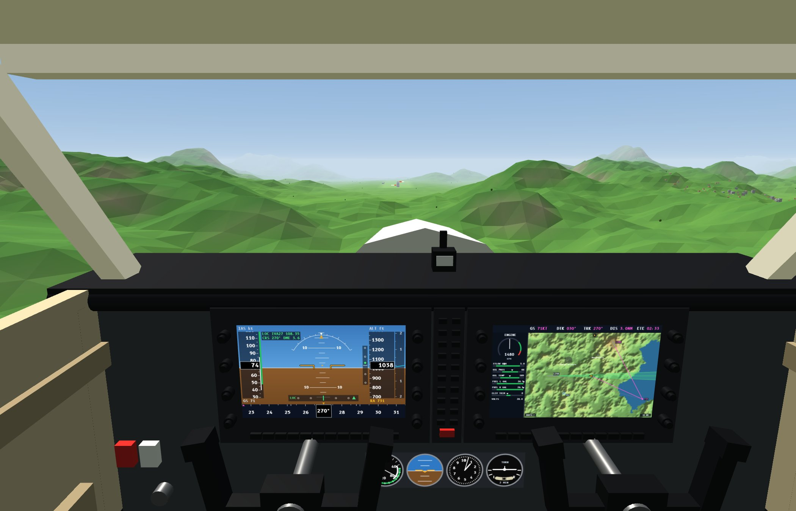
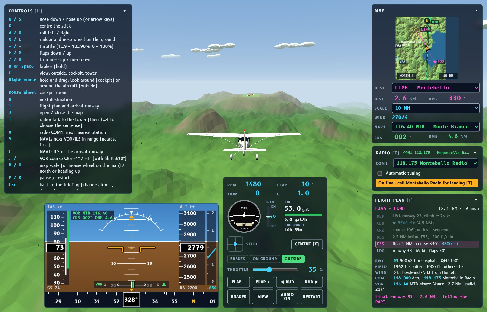

FLIGHT SIMULATOR · SIMULATORE DI VOLO
Flight manual
Browser flight simulator · Cessna 172 with Garmin G1000 avionics
A project by Massimiliano Petra · code on GitHub
Open the simulator Versione italiana1. Getting started
When the simulator opens you see the flight briefing. Here you choose:
- Language: Italiano or English. The game remembers your choice.
- World: Piedmont (real: mountains, lakes, towns, roads and 32 real airports in north-west Italy) or Valle Azzurra (invented, small, great for learning).
- Departure airport and runway: the suggested runway is the one most into the wind.
- Start: on the runway, ready for take-off, or from the parking area, on the apron: you taxi to the runway (see Take-off step by step).
- Destination: the simulator prepares the flight plan by itself.
- Time of day: day, sunset or night.
- Fuel: from full tanks (about 6 hours) to almost empty (about 15 minutes).
Then press Take off (Enter) to start at the runway threshold, or Practise landing to start on final approach to the arrival runway of your destination, about 2.7 NM out.

2. Controls
Keyboard
| Key | What it does |
|---|---|
| W / S (or arrows ↑ ↓) | Stick forward (nose down) / back (nose up) |
| A / D (or arrows ← →) | Roll left / right (ailerons) |
| K | Centre the stick |
| Q / E | Rudder left / right; on the ground it steers the nose wheel |
| + / − | Throttle up / down (hold) |
| 1 … 9, 0 | Throttle at 10 … 90%, 0 = 100% |
| F / G | Flaps down / up (0°, 10°, 20°, 30°) |
| Z / X | Trim nose up / nose down |
| B or Space | Brakes (hold) |
| C | Change view: outside, cockpit, tower |
| Right mouse button | Hold and drag: in the cockpit you look around, outside you orbit the aircraft. Release it and the view returns straight ahead |
| Mouse wheel | Zoom in the cockpit |
| N | Next destination |
| I | Show / hide the flight plan |
| M / O | Map scale / north up or heading up |
| T | Radio: opens the menu of sentences to say to the tower (then 1…4) |
| U | Radio COM1: tune the next nearest station |
| V | NAV1: tune the next VOR or ILS station in range (nearest first) |
| L | NAV1: tune the ILS of the arrival runway |
| , / . | VOR course CRS −1° / +1° (with Shift ±10°) |
| H | Show / hide the controls panel |
| P / R | Pause / restart |
| Esc | Back to the briefing, to change airport, destination, time or fuel (also from the button in the pause screen) |
How the keyboard moves the stick
While you hold W or S the stick moves little by little. When you release the key it normally stays where you left it, like a pilot holding it still. You can see its position in the small STICK square of the bottom panel: the dot low down means the stick is pulled back.
The CONTROLS panel has two settings, which the game remembers:
- Stick sensitivity (1–10, default 5): the lower it is, the softer the controls near the centre and the slower the keys move the stick. At full deflection you always have the full range.
- The stick returns to the centre when you release the keys: the aircraft, which is stable, goes back to balanced flight by itself. For long climbs or descents you then use the trim.
Mouse and gamepad
Mouse: drag on the screen as if it were a control stick; dragging starts from the current stick position.
| Gamepad | Control |
|---|---|
| Left stick | Control stick (roll and pitch) |
| Third axis | Rudder |
| Right / left trigger (or fourth axis) | Throttle up / down |
| Right / left bumper | Flaps down / up |
| A (first button) | Brakes |
| Y | Change view |
| Start | Start / pause |
3. The screen

- CONTROLS (top left): the list of keys and the stick settings. Hide it with H.
- PFD (bottom left): the main instrument, with speed, attitude, altitude, vertical speed and compass.
- Engine and systems panel (bottom centre): RPM, flaps, trim, g-load, turn coordinator, fuel, stick, throttle and buttons.
- MAP (top right): moving map, destination, distance, bearing, wind and NAV1 radio.
- FLIGHT PLAN (below the map): the phases of the flight and the arrival runway.
At the top centre you see messages (take-off, landing, radio…) and flashing warnings (stall, pull up…).
4. The PFD (Primary Flight Display)

Artificial horizon (centre)
The orange aircraft symbol stays still while the sky and the ground move. The horizontal lines are the pitch degrees (10°, 20°…). The arc with ticks at the top is the bank scale (10°, 20°, 30°, 45°, 60°). The small orange bar under the triangle is the slip/skid indicator: if it moves sideways the turn is not coordinated; correct with rudder on the side it moved to.
Airspeed tape (left)
Shows indicated airspeed (IAS) in knots. The coloured bands:
- white (40–85 kt): speeds where flaps may be used;
- green (48–129 kt): normal operating speed;
- yellow (129–163 kt): only in smooth air;
- red (above 163 kt): never exceed.
Below it is GS, the ground speed, which changes with the wind.
Altitude tape and vertical speed (right)
Altitude in feet above sea level. When the terrain is close it appears in brown, with an orange line. The vertical speed scale on the right shows how fast you climb or descend, in thousands of ft/min.
RA, the radio altimeter (below the altitude)
The large altitude number is your altitude above sea level: it does not tell you how close you are to the ground, because below you there may be the plain at 250 m or a mountain at 2000 m. RA (radio altimeter) is your height above the ground right below you, in feet. In real aircraft it is measured by an antenna under the fuselage that sends a radio signal downwards and measures how long it takes to come back.
- above 2500 ft of height it shows ---- (it is not needed up there);
- below 1000 ft it turns yellow: you are close to the ground (take-off, landing, or too low);
- on the runway it reads about 0, because it measures the height of the wheels.
It is useful above all when landing, to know when to flare (RA below 20–30 ft), and in the mountains. The real Cessna 172 with G1000 has no radio altimeter, which is found on airliners and helicopters: in the simulator it is an extra help.
Compass (bottom)
The heading is in the middle. The small magenta triangle points to the next point of the flight plan. The magenta bar starting from the centre is the turn rate trend: it shows where the heading will be in 6 seconds. The two white ticks mark a standard-rate turn (3°/s).
NAV1 radio navigation (green)
When the NAV1 radio is tuned you see:
- top left, a box with the type (VOR or LOC), identifier, frequency, the course CRS and the DME distance in nautical miles;
- at the bottom, the course deviation indicator (CDI) with the green needle: the needle shows which side the course is on, so fly towards the needle. The triangle on the right points up for TO (towards the station) and down for FROM (away from it). NO means no signal;
- with an ILS only, a vertical scale next to the altitude tape with the green glide slope diamond.

5. Engine, turn coordinator, trim, fuel
- RPM: engine revolutions (2100–2700 in flight).
- FLAP: flap position in degrees.
- TRIM: trim position (+ = nose up, − = nose down).
- G: the load you feel: 1.0 in level flight, more in turns and pull-ups.
Turn coordinator
The little aircraft banks according to how fast the heading changes. When its wing touches the L or R mark you are flying a standard-rate turn: 3° per second, a full circle in 2 minutes. At 90–100 kt that needs about 15° of bank.
The ball in the tube shows coordination. If it slides to one side, “step on the ball”: a little rudder (Q or E) on the same side.
Trim
The trim takes the effort off the stick. The blue pointer goes down (UP, nose up) or up (DN, nose down); the green band is the take-off setting.
Fuel
Shows the US gallons left (1 gallon = 3.8 litres), the consumption in gal/h and the endurance at the current consumption. The engine burns about 1.5 gal/h at idle, 8.5 in cruise and 11.5 at full throttle. The number turns yellow below 10 gallons and red below 5.

6. Map and NAV1 radio

- Click on the map (or O): north up or heading up.
- Mouse wheel on the map, the SCALE menu or M: from 2 to 100 NM or the whole region.
- Magenta line: the flight plan route; the solid part goes from the aircraft to the next point.
- Blue hexagons: VOR stations; those with a square around them also have DME, which measures distance.
- Green dashed line: the CRS course of the tuned VOR. The green fan in front of a runway is the beam of the tuned ILS localizer.
Below the map:
- DEST: the destination (also N);
- DIST and BRG: distance and bearing of the next point;
- WIND: where it blows from, and how many knots;
- NAV1: menu to choose the station;
- CRS and DME: the selected course and the distance from the station.
7. Flight plan
The simulator plans the flight to the destination by itself:
| DEP | take-off, then climb at 74 kt |
| CLB | climb to cruising altitude |
| CRZ | cruise at 100 kt on the course shown |
| DES | descent at 500 ft/min |
| F27… | final approach point, 5 NM before the runway |
| LDG | landing at 65 kt with flaps 30° |
The cruising altitude follows the visual flight rule: 1000 ft above the highest terrain along the route; eastbound (courses 000–179°) at odd thousands + 500 ft, westbound at even thousands + 500 ft.
Below are the details of the arrival runway: length, surface, field elevation, pattern altitude and the wind relative to the runway. When available you also see the ILS frequency (tune it with L) and the VOR nearest to the destination. The last line changes during the flight and tells you what to do now.

8. The G1000 cockpit

- Left screen (PFD): the same PFD described above.
- Right screen (MFD): at the top GS, DTK (desired track), TRK (actual track), DIS (distance) and ETE (time en route). On the left the engine column: RPM, fuel flow (FFLOW), oil, the two tanks (FUEL L and R) and the trim (ELEV TRIM). On the right the map.
- Standby instruments, below the screens: airspeed indicator, attitude indicator, altimeter and turn coordinator, as in aircraft without screens.
- The yokes, throttle, flap lever and trim wheel move with the controls.
In the cockpit you can look around: hold the right mouse button and drag (for example to see the runway beside you in the traffic circuit). Release it and your gaze returns forward. In the outside view the same button orbits the camera around the aircraft.
The third view, tower, watches the aircraft from the nearest control tower and follows it with the zoom: perfect for replaying a landing.
9. Take-off step by step
- Flaps 10°: press F once.
- Throttle 100%: 0 (or hold +).
- Stay on the centre line with small touches of rudder, Q / E.
- At 55 knots pull gently (S) until the nose is about 8–10° up: the aircraft lifts off by itself. The ground roll is about 240 m.
- Hold about 74 knots (best rate of climb, about 570 ft/min). If the speed drops, lower the nose a little.
- Above 500 ft retract the flaps (G) and use the trim (Z/X) so you do not have to hold the stick.
- Follow the magenta triangle on the compass towards the destination.
Starting from the parking area: taxiing
If you choose Start: from the parking area in the briefing, you are stopped on the apron next to the main runway, with the engine idling. On the ground there are yellow lines: the lead-in line, the taxiway centre line and the holding point (two solid and two dashed lines) before the runway. On the map (0.5 NM scale) the magenta line shows the route.
- Ask the tower for taxi: T, “request taxi”. The tower answers “taxi to holding point runway …” with the QNH: read it back.
- Taxi slowly (below 15 knots, otherwise TAXI SLOWER appears): a little throttle, steer with Q/E, brake with B.
- Stop at the holding point, before the runway, and call: “holding point runway …, ready for departure”.
- The tower answers “enter and backtrack runway …, line up, cleared for take-off”: enter the runway and taxi back along it to the threshold (the taxiway joins the runway half way), turn around and take off.
After landing the tower tells you to vacate the runway and taxi to the apron: once you have stopped on the apron the flight is over and you can prepare the next one. At night the taxiway and the apron have blue lights.
10. In flight: attitude, trim, turns

Attitude + power = performance. The nose sets the speed, the throttle decides whether you climb or descend. To stay level at 100 kt you need about 65% throttle with the nose on the horizon.
- Small corrections: short taps on the keys, then wait a few seconds for the aircraft to respond. The Cessna is stable: when well trimmed it almost flies by itself.
- Trim: when the aircraft flies the way you want, press Z or X until you no longer need to hold the stick, then centre it with K.
- Turning: bank 15–30° with A/D, bring the ailerons nearly back to the centre and pull very slightly so you do not lose height. To roll out, bank the other way. A 30° turn can be felt: about 1.15 g.
- Stall: below about 48 kt without flaps (40 kt with flaps 30°) the wing stops lifting. The horn sounds and STALL appears. Lower the nose at once and add power.
Flying at night
Choose Night (or Sunset) in the briefing under Time of day. At night the landscape is dark and you find your way by the lights:
- towns are carpets of lights (made from the real buildings): Turin, Novara and Cuneo can be recognised from far away;
- runways have white edge lights, a green row at the threshold and, on long runways, approach lights in front of the threshold (300 m of centre line and a crossbar);
- the PAPI works as in daytime;
- the aircraft switches on its landing light, which lights up the runway ahead, and its navigation lights (red on the left, green on the right, white on the tail, strobe).


At night the instruments matter more than usual: watch attitude, altitude and the radio altimeter, and use the ILS to arrive lined up.
11. Landing and PAPI
- Reach the final approach point (5 NM) at the altitude in the plan, lined up with the runway.
- Speed 65 knots, flaps 30° (F three times, below 85 kt).
- Descend at about 500 ft/min following the PAPI, the four lights on the left of the runway:
- two white and two red = correct slope (3°);
- or all white = you are too high;
- or all red = you are too low: add power!
- A few metres above the ground close the throttle and flare gently: pull the stick to keep the nose slightly up and let the aircraft settle on the main wheels.
- On the ground brake with B or Space.
The game rates the touchdown by the vertical speed:
| Vertical speed at touchdown | Rating |
|---|---|
| less than 120 ft/min | Butter! Perfect landing |
| 120–250 ft/min | Great landing |
| 250–450 ft/min | Good landing |
| 450–700 ft/min | Hard landing |
| more than about 700 ft/min | Landing gear destroyed |
The message also tells you how many metres past the threshold and from the centre line you touched down. The ideal point is about 300 m past the threshold.
Taking off again
Once you have stopped, the airport where you landed becomes the departure of the next flight: the flight plan is recalculated (if you had reached your destination, the nearest airport is suggested; change it with N or the DEST menu) and the radio reminds you to ask for take-off. Taxi to the start of the runway and ask for clearance with T. Fuel and position stay as they are; from then on R restarts from this airport.
12. Navigating with a VOR
A VOR is a ground radio station that transmits in all directions. The receiver on board works out which radial you are on, that is, in which direction you are as seen from the station: on radial 090 you are east of the station. If the station has DME, you also know how many miles away you are.
- Tune it: press V (several times to move to the other stations in range) or choose from the NAV1 menu. The CRS course is set direct to the station.
- Choose the course with , and . (with Shift in steps of 10°).
- Read the needle: if it is on the right, the course is to your right. Turn 20–30° towards the needle to intercept it, then when the needle centres put the heading on the CRS course.
- TO / FROM: with TO the course leads you towards the station, with FROM away from it. When you fly over the station it changes from TO to FROM.
- With a crosswind, keep the nose a few degrees into the wind to stay on course.
Stations can only be received within a certain distance, and the higher you are the further they reach (the signal travels in a straight line, like light). If you see OUT OF RANGE, climb or get closer.
In the Piedmont world the VORs are the real ones, for example TOP Torino 114.50, CSL Caselle 116.75, VOG Voghera 115.50, SRN Saronno 113.70 and BLA Biella 116.10. One difference from reality: the simulator uses degrees referred to true north, while real VORs use magnetic north, which in Piedmont is about 3° further east.
13. ILS approach
The ILS guides you all the way to the runway with two radio beams:
- the localizer (LOC) tells you whether you are left or right of the runway centre line. It is much more precise than a VOR: the needle is at full scale when you are 2.5° off;
- the glide slope tells you whether you are above or below the 3° slope. Full scale: 0.7°.
- Press L to tune the ILS of the arrival runway; the frequency is also in the flight plan.
- Approach the extended runway centre line at an angle of about 30°, 2000–2500 ft above the field, towards the final approach point.
- When the LOC needle moves towards the centre, turn onto the runway course (CRS). From now on make small corrections of a few degrees.
- When the glide slope diamond comes down to the centre, set flaps and power to descend at about 400–500 ft/min at 65 kt.
- Diamond above the centre = you are low, descend less. Diamond below the centre = you are high, descend more.
- Over the threshold you will be at about 50 ft: look outside, flare and land.
14. Radio communications with the tower
Communications are in English, with the standard international (ICAO) phraseology, as in real life. The tower speaks with a synthetic browser voice; you do not have to speak: press T, choose the sentence with 1…4 and the game says it with the pilot's voice. In the RADIO panel (below the map) every transmission stays written.
- Your callsign is I-VOLO (“India Victor Oscar Lima Oscar”). After the first call the tower uses the abbreviated one, I-LO.
- Numbers are said digit by digit: runway 27 = “runway two seven”, QNH 1016 = “Q N H one zero one six”, and 9 is “niner”.
- When the tower gives you a clearance you must read it back. Sometimes one of the answers is wrong, with a different runway or QNH: if you choose it, the tower corrects you. Listen carefully!
- When the tower calls you, the panel flashes and an orange prompt appears. If you do not answer, after a while the tower calls again.
- Nobody talks while someone else is transmitting: wait until the end, then press T.
A typical flight
| When | Who | What is said |
|---|---|---|
| At the parking area (if you start there) | You | ask Ground (or the tower) for taxi: “… at the apron, request taxi” |
| Ground | “taxi to holding point runway …”, QNH and, where there is a Ground, “at holding point contact … Tower” with the frequency; you read it back | |
| At the holding point | You | on the tower frequency: “holding point runway …, ready for departure”; the tower answers “enter and backtrack…, cleared for take-off” |
| On the runway, before leaving (runway start) | You | ask to depart: “… ready for departure” |
| Tower | runway, wind, QNH and “cleared for take-off”; you read it back | |
| 5 NM from the airport | Tower | “leaving the control zone, frequency change approved”; you say goodbye |
| 20 NM from the destination | You | call the arrival tower: position, altitude, “inbound for landing”, or request the ILS |
| Tower | straight-in approach, traffic circuit or “cleared ILS approach”, with QNH; then “report final” | |
| On final | You | “final runway …” |
| Tower | wind and “cleared to land”; you read it back | |
| After landing | Tower | “vacate the runway” and welcome |
Tuning the radio (COM1)
Every airport has its own frequency, shown in the flight plan (COM line: departure and arrival) and in the COM1 menu of the RADIO panel. Before calling a station you must tune its frequency: from the COM1 menu or with the U key, which steps through the nearest stations. If you call on the wrong frequency nobody answers, as in real life, and the panel tells you which frequency you need. When you leave the control zone the tower also gives you the frequency of the arrival station: read it back and then set it.
If you do not want to think about frequencies, tick Automatic tuning: the game sets the right frequency when you call (you can still change it by hand). A MAYDAY is always answered, whatever the frequency, because in real life there is an emergency frequency (121.5) that is always monitored.
If you take off or land without a clearance, the tower notices and tells you. If the engine stops you can declare an emergency with MAYDAY: the tower gives you the nearest airport, the heading and the distance.
In the Piedmont world stations and frequencies are the real ones (from OurAirports): for example Torino Ground 121.705 and Torino Tower 118.500 at Caselle, Malpensa Tower 119.000, Cuneo Information 119.550, Bresso Radio 122.005. Towers give clearances; Information (AFIS) and Radio services only give information (runway in use, wind, traffic) and leave the decision to you. Where there is a Ground frequency, when starting from the parking area you ask Ground for taxi, and Ground hands you over to the tower at the holding point. The tuned frequency is shown at the top of the panel (COM1).
15. Warnings and emergencies
| Warning | Meaning | What to do |
|---|---|---|
| PULL UP | You are about to hit the ground while descending | Pull up and apply full power |
| STALL | The wing is close to stalling (the horn sounds) | Nose down, add power |
| OVERSPEED | Above 163 kt | Reduce power, raise the nose gently |
| FLAP SPEED | Flaps extended above 85 kt | Slow down or retract the flaps |
| OVER-G | Load above 3.8 g | Gentler manoeuvres |
| LOW FUEL | Less than 5 gallons | Land as soon as possible |
| ENGINE OUT | Out of fuel | Glide at 65 kt towards a field |
Engine failure
Without fuel the engine stops and the propeller only turns in the airflow. Hold 65 knots at once, the best glide speed: descending at about 800 ft/min the Cessna covers about 2.5 km (1.4 NM) for every 1000 ft of height. Look for a runway or a field into the wind, and use flaps only when you are sure you will make it.
Crashes
You crash if you touch down faster than about 700 ft/min, end up in the water, hit the ground with a wing, the propeller or the fuselage, exceed about 183 kt, or exceed +5.7 / −2.3 g. Press R or Enter to start again.
16. Cessna 172 numbers
| Speed | Knots | Meaning |
|---|---|---|
| Vso | 40 | stall with flaps 30° |
| Vs1 | 48 | stall without flaps |
| Vr | 55 | rotation (raise the nose on take-off) |
| Approach | 65 | final with flaps 30°; also best glide |
| Vy | 74 | best rate of climb |
| Vfe | 85 | maximum with flaps extended |
| Cruise | 100–110 | at 65–75% throttle |
| Vno | 129 | maximum in turbulent air |
| Vne | 163 | never exceed |
Other data: 1000 kg with pilot and fuel, 11 m wingspan, 53 US gallons of usable fuel. The flight model (6 degrees of freedom) uses the aerodynamic coefficients of the real C172: you can read and change them in dati/aereo.js.
17. Worlds and the editable map
- Piedmont: real terrain (250 m grid), 32 airports with their real runways, lakes, towns, roads, railways, rivers, villages with buildings and the real VORs. It covers Piedmont plus parts of Lombardy, Liguria, Aosta Valley, Switzerland and France (about 219 × 287 km). The main monuments are there too, as visual landmarks: Mole Antonelliana, Superga, the Lingotto with its rooftop test track, the two Turin skyscrapers, the Palace of Venaria, Stupinigi, the Sacra di San Michele, Vicoforte, San Gaudenzio in Novara and Oropa. They are simplified models, marked on the map with a gold triangle.
- Valle Azzurra: an invented world, small and simple. Everything is in the file
dati/mappa.js, written to be edited by hand: mountains, lakes, airports and runways, towns, woods, VORs, weather and starting point. The comments in the file are in Italian.
The monuments
Seen from the cockpit, as they appear in the game.


Shortcuts to add to the page address: ?lang=en or ?lang=it choose the language; ?mappa=valle or ?mappa=piemonte choose the world; #salta skips the briefing, #finale starts on final, #vista=1 starts in the cockpit.